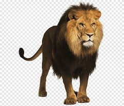

:الكود الاول
mosq=pd.read_excel("") print(mosq) mosq_train, mosq_test = train_test_split(mosq, test_size=0.2, random_state=0) model = LinearRegression() model.fit(mosq_train[['rain(m m)','mean_T(°C)', 'max_T(°C)']], mosq_train['mosquito_Indicator']) mosq_train_pred = model.predict(mosq_train[['rain(mm )",mean_T(°C),max_T(°C)]]) print('training error') print(mean_squared_error(mo sq_train['mosquito_Indicator'], mosq_train_pred)) k = model.coef_ b = model.intercept_ print('k=', k, 'b=', b) mosq_test_pred = model.predict(m osq_test[['rain(mm)',mean_T(°C)', 'max_T(°C)]]) print('test error') print(mean_squared_error(m osq_test['mosquito_Indicator'], mosq_test_pred)) m = [10, 20, 32] m[2] * k[2] + b result = m[0] * k[0]+m[1]*k[1] + print('the model predict mosquito_indicator is', result)
:الكود الثاني
:الكود الثالث
#في هذه التعليمات هناك ثلاث خطوت نطبقها #الخطوة الأولى هي قراءة الصورة الملونة وعرضها row, column, channel = color_image.shape #الخطوة الثانية هي باستخدام دالة ري سايز إعادة تحجيم الصورة من خلال تحديد عدد الأعمدة والصفوف التي تكون المربعات من البكسلات ونخزنها في متغير rest1 #في هذه التعليمة حددنا حجم المربع إلى أربع صفوف وأربع أعمدة res1 = resize(color_image, (column // 4, row // 4)) #نفس التعليمة السابقة ولكن غيرنا الحجم إلى ست عشر صف وست عشر عمود وخزنا الصور الناتجة في متغير آخر res2 = resize(color_image, (column // 16, row // 16)) #قمنا بعكس العملية بمعنى أننا كبرنا الصورة المستخرجة في المتغير الأول لتعود إلى حجها الطبيعي وخزناها في متغير res3 = resize(res1, (column, row)) #أعرض جميع الصور الناتجة بعد عملية التحجيم imlist_show([color_image, res1, res2, res3])
:الكود الرابع
info, background = get_back_image("sport") row, column = info[0][0] print(f"row of the template is：{row}，column is：{column}") result = resize(color_image, (column, row)) imshow(result)
:الكود الاول
#الخطوة الأولى هي قراءة الصورة التي بها عيوب وتخزينها في متغير noised_img = get_image("female_noise3.jpg") #قمنا بعرض الصورة بعد استدعائها imshow(noised_img, "noised img") #لإصلاح العيوب في الصورة استخدمنا فلتر المتوسط mean_kernel = [ [1/9, 1/9, 1/9], [1/9, 1/9, 1/9], [1/9, 1/9, 1/9] ] #هنا استدعينا الصورة بعد اصلاح العيوب التي بها وإظهار النتيجة img_mean = filter_2d(noised_img, mean_kernel) imshow(img_mean, "repired by the mean kernel") #نستخدم فلتر آخر يسمى فلتر غاليسيان فلتر ونظهر الصورة بعد تطبيق الفلتر gaussian_kernel = [ [1/16, 2/16, 1/16], [1/16, 4/16, 2/16], [1/16, 2/16, 1/16] ] #هنا أظهرنا الصورة بعد تطبيق الفلتر img_gauss = filter_2d(noised_img, gaussian_kernel) imshow(img_gauss, "repired by the Gaussian kernel") imlist_show([noised_img, img_mean, img_gauss])
:الكود الثاني
#هنا استدعينا الصورة color_img = get_image("c_book.jpg") imshow(color_img) #هنا تطبيق للفلتر الأول Longitudinal edge convolution kernel l_edge_kernel = [ [1, 0, -1], [1, 0, -1], [1, 0, -1] ] l_edge_img = filter_2d(color_img, l_edge_kernel) imshow(l_edge_img, "l edge image") #هنا تطبيق للفلتر الثاني Transverse edge convolution kernel t_edge_kernel = [ [1, 1, 1], [0, 0, 0], [-1, -1, -1] ] t_edge_img = filter_2d(color_img, t_edge_kernel) imshow(t_edge_img, "t edge image") #هنا تطبيق للفلتر الثالث Edge convolution kernel edge_kernel = [ [-1, -1, -1], [-1, 8, -1], [-1, -1, -1] ] edge_img = filter_2d(color_img, edge_kernel) imshow(edge_img, "edge image")
:الكود الثالث
#قممنا يتحميل الصورة ون ثم استداءها وتخزينها في متغير ومن ثم اظهارها img = get_image("http://sensestudy-server.edu/api/resource/public/accountstorage-objs/bb4a6f67-9c62-4640-b9c2-12b36792ab4c/صورة تطبق عليها الفلاتر.jpeg.jpg") imshow(img) #تطبيق الفلتر الذي يركز على الحواف بشكل عام edge_kernel = [ [-1, -1, -1], [-1, 8, -1], [-1, -1, -1] ] edge_img = filter_2d(img, edge_kernel) imshow(edge_img, "dege image") #تطبيق فلتر يقوم بتحويل الطورة إلى صورة سلبية أو رسم بقلم الرصاص sketch_image = 255 - edge_img imshow(sketch_image, "sketch effect")
:الكود الرابع
gray_img = get_image("female_noise3.jpg", fmt = "gray") imshow(gray_img) edge_kernel = [ [-1, -1, -1], [-1, 8, -1], [-1, -1, -1] ] edge_img = filter_2d(gray_img, edge_kernel) imshow(edge_img, "edge image") sketch_image = 255 - edge_img imshow(sketch_image, "sketch effect")
:الكود الاول
# أولا تحميل مجموعة البيانات الخاصة بالحيوانات x, y = load_animals('train') #طباعة عدد البايات الموجودة في قاعدة البيانات print(len(x)) #الحصول على صورة واحدة من الصور الموجودة في القاعدة والتي رقمها 50 id = 50 img = x[id] # عرض تلك الصورة imshow(img, 'Raw image') # استخدام ميزة HOG على صورة واحدة من الصور في القاعدة #حجم الخلية لهذه الميزه هو 8 hog_img = get_hog_img(img, cell_size = 8, resize = False) imlist_show([img, hog_img], ['Raw image', 'HOG image cell_size = 8']) #استخدام ميزة HOG على صورة واحدة من الصور في القاعدة #حجم الخلية لهذه الميزه هو 16 hog_img = get_hog_img(img, cell_size = 16, resize = False) imlist_show([img, hog_img], ['Raw image', 'HOG image cell_size = 16']) # استخدام ميزة HOG على صورة واحدة من الصور في القاعدة #حجم الخلية لهذه الميزه هو 64 hog_img = get_hog_img(img, cell_size = 64, resize = False) imlist_show([img, hog_img], ['Raw image', 'HOG image cell_size = 64'])
:الكود الثاني
img=get_image("") imshow(img) # استخدام ميزة HOG على صورة واحدة من الصور في القاعدة #حجم الخلية لهذه الميزه هو 8 hog_img = get_hog_img(img, cell_size = 8, resize = False) imlist_show([img, hog_img], ['Raw image', 'HOG image cell_size = 8']) # استخدام ميزة HOG على صورة واحدة من الصور في القاعدة #حجم الخلية لهذه الميزه هو 16 hog_img = get_hog_img(img, cell_size = 16, resize = False) imlist_show([img, hog_img], ['Raw image', 'HOG image cell_size = 16']) # استخدام ميزة HOG على صورة واحدة من الصور في القاعدة #حجم الخلية لهذه الميزه هو 64 hog_img = get_hog_img(img, cell_size = 64, resize = False) imlist_show([img, hog_img], ['Raw image', 'HOG image cell_size = 64'])
:الكود الثالث
hog_img = get_hog_img(img, cell_size = 16, resize = False) imlist_show([img, hog_img], ['Raw image', 'HOG image cell_size = 16']) hog_img = get_hog_img(img, cell_size = 64, resize = False) imlist_show([img, hog_img], ['Raw image', 'HOG image cell_size = 64']) img1 = resize(img, (224, 224)) hog_img1 = get_hog_img(img1, cell_size = 8, resize =False) imlist_show([img1, hog_img1], ['Resize image', 'Hog image cell_size = 8']) hog_img2 = get_hog_img(img1, cell_size = 16, resize =False) imlist_show([img1, hog_img2], ['Resize image', 'Hog image cell_size = 16'])
